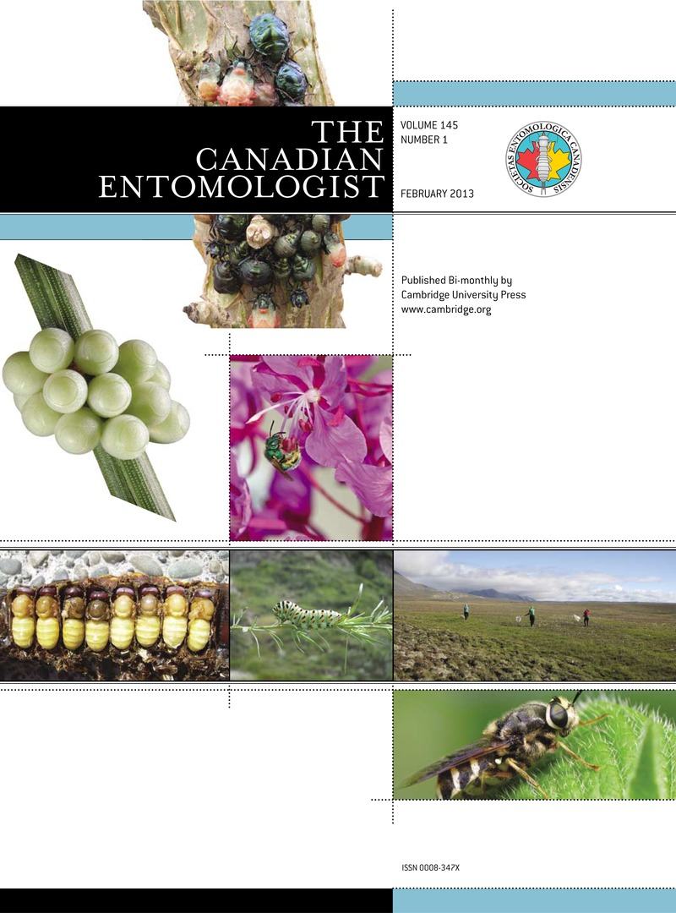

Research

Research in our group focuses on many facets of insect systematics and evolution, which in the big picture aims to understand the dynamics and mechanisms by which biodiversity arises. Despite this broad context, many of our research questions operate on more microevolutionary scales—the wee tips of our great tree (*web) of life, and often the grey zones between them. To answer our questions, we use tools from integrative taxonomy, genomics (particularly phylogenomics and population genomics), and bioinformatics. Taxonomically, we focus on lepidopteran and dipteran systems, but dabble in groups from across the insects.
Species identification & delimitation
Many of our research projects revolve around a simple question: is it one species or two? While basic in scope, this question is often extremely difficult to answer, both methodologically and conceptually. Species identification and delimitation permeate the taxonomic, population genetic, and phylogenetic research conducted in the lab, as well as forays into how machine learning can be used to facilitate species delimitation.
Speciation & hybridization
Hybrid interactions have long provided unique “natural laboratories” for studying speciation, as they highlight cases where reproductive isolation breaks down between diverged species. Genomics is providing new insight into the process of hybridization and speciation, and we have ongoing projects studying historical and contemporary hybridization, the genomic architecture of speciation, and phylogeography in various swallowtail butterfly species groups.
Systematics & phylogenomics
Phylogenetic inference provides a conceptual and analytical backbone for many of our research questions. This extends from directed systematic research questions to developing new methodologies for phylogenomic data generation and analysis, such as Highly Multiplexed Amplicon-based Phylogenomics.
Conservation genetics
Given the sheer diversity of insect systems, the main conservation needs are often identifying and delimiting Evolutionarily Significant Units (ESUs) in the context of existing taxonomy and anthropogenic habitat destruction. We have several ongoing projects using population genomic and phylogenomic approaches to evaluate the evolutionary dynamics of threatened and federally-endangered butterflies and moths.
Applied molecular diagnostics
Recurrently invading pests present unique challenges for pest management, but also opportunities to utilize genomics to understand invasion dynamics and inform regulatory management through pathway analysis. We have ongoing projects to develop molecular diagnostic tools for use by regulatory agencies, including leveraging phylogenomic datasets for highly informative markers for species identification, using population genomics to develop pathway analysis tools for source determination of intercepted specimens, and developing bioinformatic tools to facilitate data analysis for these diagnostic tools.
Organic poultry diet diversity
We also sequence DNA from chicken poop to understand the potential function of pastured poultry in organic agriculture.
People
Julian R Dupuis
Assistant Professor, Department of Entomology
Curator, University of Kentucky Insect Collection
BSc Northern Michigan University | PhD University of Alberta | PDF University of Hawai`i/USDA-ARS
julian[..dot..]dupuis[..at..]uky.edu
Office: S307C Ag Science Center North, (859) 562-2544
Eric Chapman
Research Analyst, Collections Manager UKIC
BSc | MSc | PhD Kent State University | PDF University of Kentucky
eric[..dot..]chapman[..at..]uky.edu

Kim Vertacnik
Postdoctoral scholar
BSc Western Washington University
PhD University of Kentucky
kim[..dot..]vertacnik[..at..]uky[..dot..]edu
Kristie Schmidt
PhD student
BSc | MSc University of South Dakota
kristie[..dot..]schmidt[..at..]uky.edu
Kantima Thongjued
PhD student, co-supervised with David Gonthier
BSc | MSc Prince of Songkla University
thongjued[..dot..]k[..at..]uky.edu
Ryan Lardner
MSc student
BSc Hillsdale College
ryan[..dot..]lardner[..at..]uky.edu
Alumni
Oksana Vernygora Postdoctoral scholar (2020-2022). Current position: Science Lab Evaluator, Genomics Unit, Canadian National Centre for Foreign Animal Diseases (CFIA)
Undergraduate students
Joe Dezarn ENT395 (2022) Salticidae of Kentucky
Charlotte Jensen ABT395 (2022) Sequencing the Sternidius alpha species complex
Publications
For current publications, please see google scholar.

The UKIC

The University of Kentucky Insect Collection
General information
The University of Kentucky Insect Collection (UKIC) is the largest
entomological collection in Kentucky and a major collection in the east-central USA. The collection
houses somewhere between 750 thousand and one million pinned specimens in 1,868 drawers. Major strengths
include leafhoppers (>250 drawers) and Lepidoptera (730 drawers). The collection is Kentucky centric, but
has specimens from all over the US, and more exotic locations in Central and South America (Costa Rica,
Panama, Venezuela), Asia (Japan, Phillipines, Thailand), and the Middle East (Saudi Arabia). There is also
a small collection of ethanol-preserved specimens.
Current efforts & projects
Our main push at the present time is to unite the various series/facets of the collection into one
integrated unit (see history below). This will be done to facilitate future databasing and digitization,
but is a large undertaking given the current organization. Check back here for updates, and if any UK students
are interested in museum/collection informatics or volunteering, please contact us!
One of the first projects we are tackling during the “UKIC integration process”
is to generate a databased checklist of the Cerambycidae of KY,
using the SCAN.
UKIC hosts the annual meeting of the Society of Kentucky Lepidopterists every fall. Stay tuned for more details.
Contact
For UKIC inquiries/loan requests or to schedule a visit, please contact Julian Dupuis or Eric Chapman.
History
The University of Kentucky Insect Collection (UKIC) dates to 1889 when Harrison H. Garman (the first UK Entomology Department chair) collected his first specimens for the collection on July 16. Garman labeled all of his specimens with collecting event numbers, corresponding to entries that he maintained in a logbook. By 1894, the collection included 24,156 pinned specimens and another 41,000 in alcohol. In 1905, the collection was moved to the new Kentucky Agricultural Experiment Station (which later became Scovell Hall). Mary Didlake, a departmental assistant from 1901-1957 and interim chair in 1929, led the moving efforts, where a fresh snowfall facilitated the transfer via farm sleds. She was pleased with the move in that her new work desk was now next to “a big north window for good microscope lighting”. Garman, who retired in 1929, made his last logbook entry (no. 3656) on May 23, 1944, the year he passed.

Garman’s collection logbook and labeling strategy, and Garman himself.
Walter Price took over as department chair in 1929, but the next person to make significant contributions to the collection was Lee H. Townsend, Sr., whose curator tenure was from 1936-1968 and served as department chair from 1957-1968. Townsend specialized in the morphology of carpenter ants and Neuroptera and as an avid collector he made substantial contributions to the UKIC. Paul O. Ritcher, entomologist for the Kentucky Agricultural Experiment Station from 1936-1949, was known internationally for his contributions to the biology, systematics, and larval taxonomy of the Scarabaeoidea. He contributed and identified many specimens to the UKIC, especially beetles. In the late 20th century, Rudy Scheibner (extension entomologist, 1966-1992) was the Entomology Department’s primary diagnostician and contributed many specimens and identifications – he was known as someone who could identify anything, including spiders and spring tails, and had particular expertise with weevils. Curator Paul Freytag (professor, 1967-1993) made vast contributions to the collection, particularly with leafhoppers. Freytag has identified tens of thousands of leafhopper specimens in the collection and has described over 1,000 species in his career. As a professor emeritus, he remains active in 2020 and is currently working on curating the UKIC leafhoppers, which is one of the most significant parts of the collection, with an estimated 100,000 specimens.
As lepidopterist Charles Covell, professor at the University of Louisville (UL), was approaching retirement in the early 2000s, he began the process of transferring UL’s insect collection to UK. This process was completed in 2003. The UL collection dates to 1936 with the arrival of leafhopper expert Dr. David A. Young. Other entomologists who played a significant role in building the UL collection were beetle specialist Theodore Spilman (curator in the 1950s), and leafhopper specialist Dr. Paul Christian (1958-1962). Dr. Covell was hired in 1964 and built the collection from around 28,000 specimens to an estimated 250,000 at the time when the majority of it was donated to the UKIC.
In 2010, the collection was moved into its current location in the Dimock building. The collection is currently housed in compactors and consists of somewhere between 3/4 and 1 million pinned specimens in 1,868 drawers, as well as a small collection of ethanol-preserved specimens. Despite being consolidated in one space, the various units/series of the collection (the original UK collection, the UL collection, various KY-centric projects, etc.) still exist as independent entities (with independent taxonomic organizations). These independence of these units forms the basis of much of the current curatorial work in the collection. In 2020, the collection was registered with the Symbiota Collections of Arthropods Network (SCAN) to facilitate databasing efforts and provide open-source biodiversity data to aggregators such as GBIF.
UKIC curators
Harrison Garman 1889-1929
Lee Townsend, Sr. 1936-1968
Paul Freytag 1967-1993
Michael Sharkey 1996-2017
Julian Dupuis 2019-present
Contact
Email:
julian[..dot..]dupuis[..at..]uky[..dot..]edu
Shipping:
Department of Entomology
S-225 Ag Science Center North
1100 South Limestone
Lexington, Kentucky 40546
(859) 257-7476